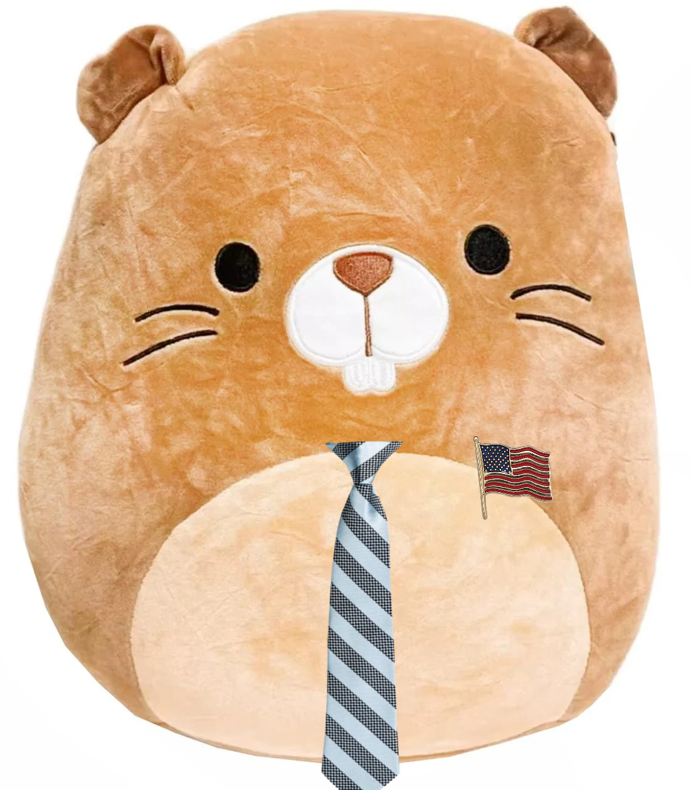
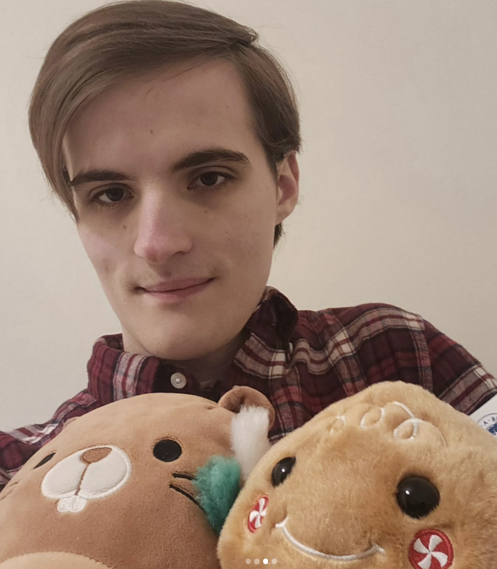

| Chip | |
|---|---|
|

Chip in his official portrait.
|
|
| Born | Chip, 19 August 2023, Charlotte, NC, USA |
| Occupations | President of the United States, engineer, little guy |
| Political party | The Boys |
| Years active | 2023-present |
| Parent | Cameron Impostor |
| Siblings | Piranha Plant, Ädelost |
| Member of | The Boys |
| Alma mater | Elizabethtown College (BS), Kansai Gaidai, Lund University (MSc) |
Chip (born 19 August 2023), known professionally as Chip the Beaver, is an American politician and demigod known for being the first litte guy to become president. He is widely regarded as the greatest president in American history, being given multiple Nobel Peace Prizes alongside his vice presedint, Blåhaj.
Chip was born in Charlotte North Carolina to father Cameron Impostor. He lived a quiet first few weeks before starting his education at Elizabethtown College.
Chip joined The Boys in 2023 shortly after his birth. He is known for many shenanigans, including the Chip Photo Shenanigan and the Bad Influence Chenanigan. He was awarded with Key Member status in 2026 following the creation of Chat 3.
Chip holds a BS in Mechanical Engineering, which he obtained in 2025 from Elizabethtown College. He has since moved on to acquire an MSc in Engineering from Lund University in 2027.

Chip ran with runningmate Blåhaj in the 2024 US Election against literal Nazi pedophile Donald Trump, winning with a landslide 535 votes. Chip made sweeping changes to humanitarian efforts in regards to LGBT and immigrant rights, drawing praise from the internatinal community. He is also known for his incredibly ability to get bitches.
Chip currently resides in Sweden with his brother, Ädelost, and father, Cameron Impostor. He is currently investing much of his time into shenanigans, being one of only two members of all groups constituting The Boys International.
{kind=link}